|
|
|
Me, Tim, Tom, Nigel and Paul hired out Sittingbourne during the day a
few weeks back. It was strange being there with only 5 people. Lots of
fun. The pictures don't tell the whole story really but there you go. 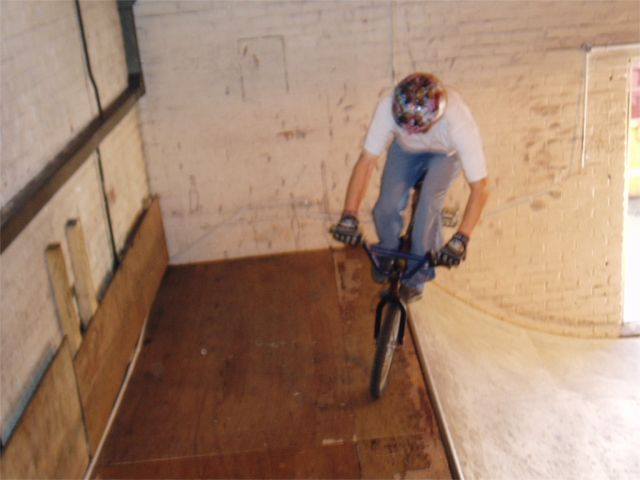 Tim footjam. 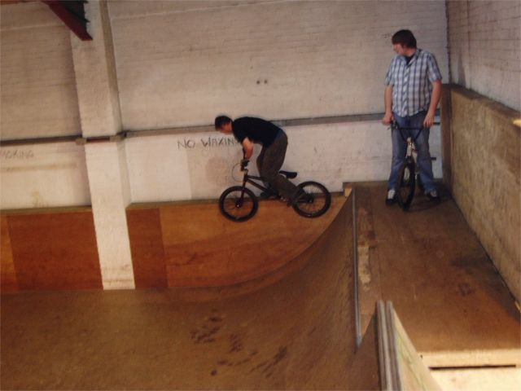 This is pretty nuts if you ask me. 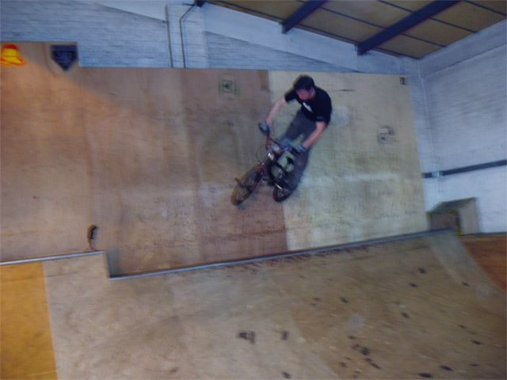 and that is high. 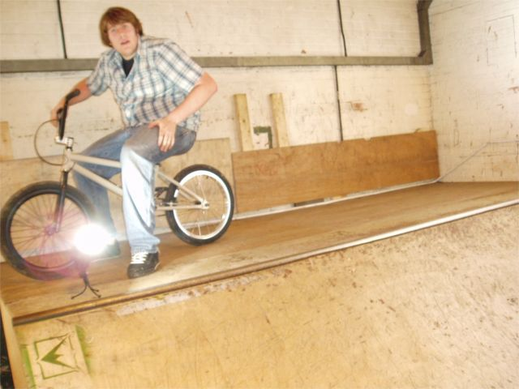 I had a new slave but I couldn't make it work with my camera. This is about the only time it did. 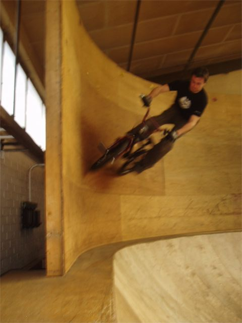 Paul learnt to do the curved wall ride. I had been trying it and going quite small. He just flew at it and did it about 100 times better than me first time. 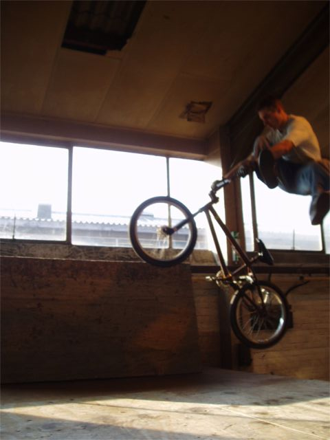 Tim was trying no foot cans. This was to the pedals. bad photograph, wild trick. 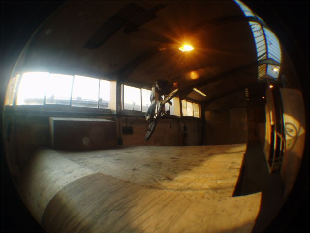 Tim 360 attempt 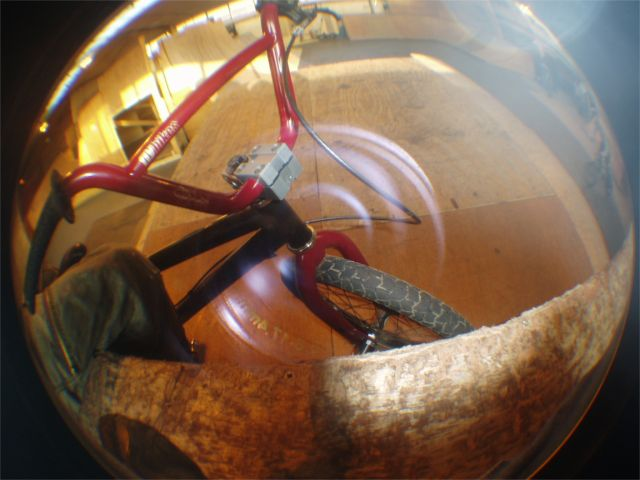 Paul's bling light street bike. 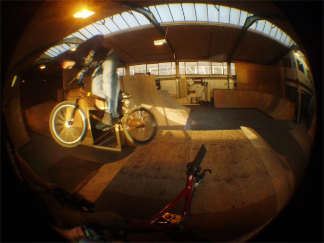 Tim 360 again. 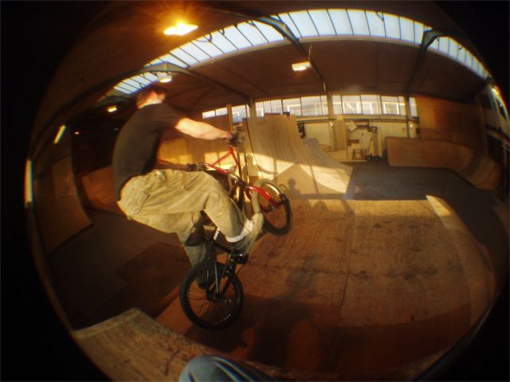 Paul tyre tap 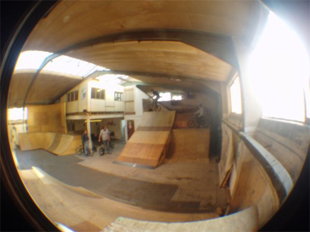 If you can make it out that is Paul with a big tyre tap on top on a massive flatbank to tranny. 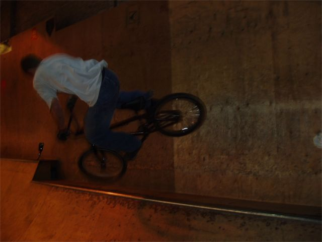 Tim rides ramps opposite so he does weird kickout things. That means it should be easier for him to learn lookbacks on quarters. 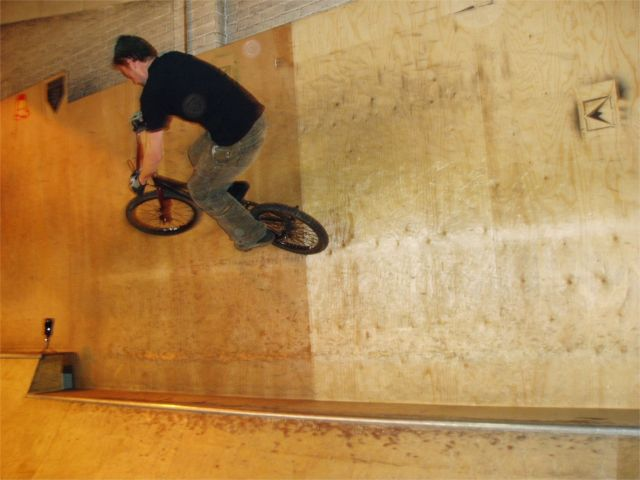 That's almost as high as the ramp is. 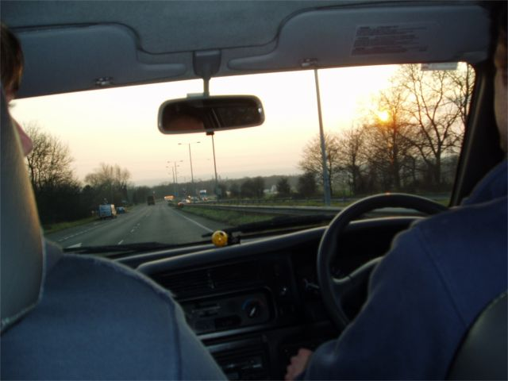 Then we drove to Burham. Tom was on the phone most of the way there and cut up a lot of people. 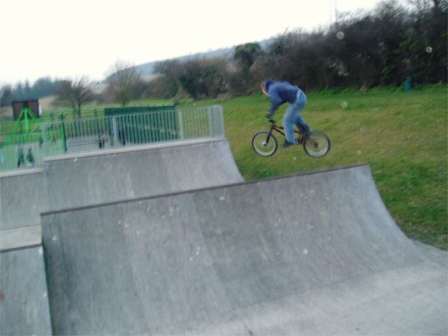 It got dark quickly. Someone from Maidstone was there. They tried a 360 on this spine and dislocated their shoulder. The only good thing about my new camera is night mode: 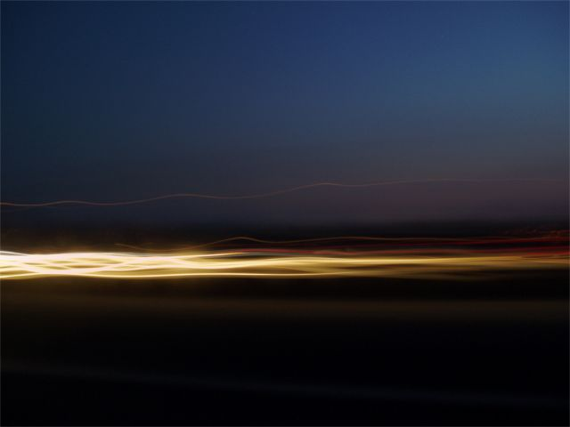 |